south caucasus festival - 2008: sheeps on the urban background

Mkhitar Gishyan
Chairman of Noyemberyan Youth Movement Club
Festival event coordinator
Chairman of Noyemberyan Youth Movement Club
Festival event coordinator
Mkhitar Gishyan: There is still an ongoing resistance in the region which no one likes, we all deserve a peaceful and civilized space to live in. Certainly the people and society is also tired of the resistance, furthermore all problems that cannot be solved in a political way can definitely be solved as a result of national diplomacy.
Regardless of nationality everyone wants to live in peace and harmony. It has an essential meaning for us because living in a borderline region with Azerbaijan the population involuntarily feels the influence of the resistance. We think, the intercultural ties and human relations generally will be the best way to solve the conflict. We shouldn’t forget that in time we really were good neighbors.
Regardless of nationality everyone wants to live in peace and harmony. It has an essential meaning for us because living in a borderline region with Azerbaijan the population involuntarily feels the influence of the resistance. We think, the intercultural ties and human relations generally will be the best way to solve the conflict. We shouldn’t forget that in time we really were good neighbors.
"three comrades" film discussion, september 8
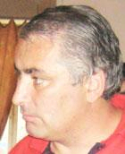
Voskan Sarksyan
Host of festival
journalist
chief-editor of “Tesankyun” weekly
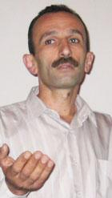
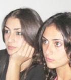
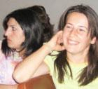
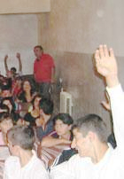
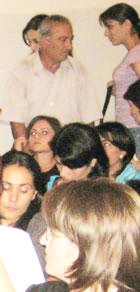
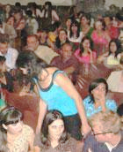
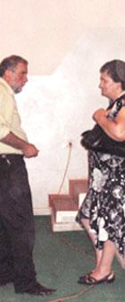
Host of festival
journalist
chief-editor of “Tesankyun” weekly
S. Beglaryan
and
M. Meshvildishvili
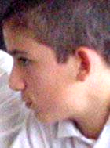
M. Meshvildishvili
Sasun Evanesyan
Koti village
student of Human Rights Defender school
Koti village
student of Human Rights Defender school
Host: We know very well, that the victims among the peaceful population in any war are the burden on the consciences of the politicians. And Yeltsin and Dudayev are responsible for the inhumanity in this particular war. There are no wars that are fair, there are two truths in any war, and in the final instance our today’s opinions will not be pretences to the truth. Today we viewed the first film of many, and every one of them carries within itself an idea, which calls for changes. What’s your opinion, what did the author want to express through this film? What kind of changes was it calculated for?
👤 All the same this film has the following message: No to war, No to violence, and about the importance of every nation’s struggle for freedom. I’d like to mention that Parouyr Hayrikian was the only person through out the entire Armenian history, who expressed solidarity with the struggle of the Chechnyans. Different nations have a different ideology, which is why when it comes to matters concerning national interests, there have been, there are and there always will be contradictions. But that’s not the reason why wars start. All people can live in the world with their own ideologies and in peace with their neighbors. The interests of third, more powerful governments start wars.
I’d like to state the following, this film reminds us of the importance of human dignity. The importance of human freedom, also, the film was too long.
👤 When I got the invitation with the cover letter stating «I am Human», it forced me into deep thoughts Being governed by instincts we are beginning to forget what it is, or what it means to be human.
Our today’s guests are our friends and dear guests from Georgia. These are people who grew up with their own idea of their homeland, with the image of Georgia, with the image of the map of their own country where Ajaria, Abkhazia, and South Ossetia are included. We’re not called here to pass verdicts. You cannot change the map, let alone take the image of the country out of some ones heart. Today our Armenia is a very small country, but to this day we continue to imagine it to be a big country, one with Western Armenia.
There is a country called China. Personally for me that country doesn’t exist no matter how over populated, how great and powerful it is, because I don’t know that country, I don’t have any association with the people of that country, and I don’t understand the Chinese. Now Georgia I am familiar and close with, even if it is limited with the images of Tbilisi and Mtskhet. And when someone touches or hurts that country I feel that pain. This film came to us to remind us one of the 10 biblical commandments once more: «Thou shall not kill!»
👤 Politicians and not the people draw Borders. Is no one going to ask us how to draw them? They just drew them and that’s that.
And in concern to the film, it’s nothing more than a reflection of our reality, but it was very extended. In todays with all the modern conveniences to spread information a short and concentrated format is more effective.
👤 The film is very interesting. It has few layers; there are some wonderful exposures. But I don’t agree with the choice of American sadism genre in order to show and to realize pain. You could see the pain in people’s eyes and faces. The rest was unnecessary, too much naturalism. It really wasn’t necessary to show it all in order to understand what’s going on there, when we were watching the reports from Tskhinvali.
Host: It would be interesting to hear the opinion of Mr Gishian the school principal that is with us today. As a schoolteacher, what did you get out of this film, and in your opinion what could children get out of it?
Ruben Gishyan: Nothing. This film gave me absolutely nothing!
Host: Why?
Ruben Gishyan: Because this film was obviously anti Russian. There was an element of propaganda. And what did it give my students who are in the audience today? Hatred toward the group of people who are taking responsibility for all that, by justifying it with what went on in Chechnya, as if trying to make a point. It’s the same as … when a hero of one nation becomes subject of demonization for the other.
Host: Do you think there is a way to justify war?
Ruben Gishyan: I’m only seeing the one side of this war, from one point of view. Someone always commissions a film to be made?
Host: This film is not commissioned its author’s point of view. There is a difference.
Georgi Vanyan: I don’t agree with mister Gishian. Not only Armenia, but also our entire post soviet society has absolutely no information about what went on in Chechnya. I say this with confidence, for I have had the opportunity to be in relations with both Russian and Chechnyan rights keepers. In my opinion, this film is a picture of real events that took place in Chechnya, a small part of what we don’t know.
👤 : Wasn’t there brutality conducted from both sides?
👤 Just as in any war, brutality was conducted from both sides, which are undeniable facts that we cannot neglect. It does seem like an anti Russian film when I watch it as a regular person not as a specialist (journalist). I say this from inhabitant’s point of view. From that point of view there is a disturbance in the balance, the film has no equilibrium, this film doesn’t fully inform a regular person. It’s considered a separate point of view, of some one prejudiced.
Martina Tikhov: In order to clear the situation I’d like to tell you the story of the making of this film. Masha Novikova –the author of this film, is a Russian who lives abroad, where she met with some chechnyans. She was under such an impression by their stories about the war that she decided to make this film.
👤 To be Russian does not mean being anti Russian.
👤 Her opinion is unilateral any way.
Georgi Vanyan: I don’t reject the fact that there is no element of propaganda in this film. There is propaganda in everything. Only when I was viewing, only the human interested me in this film. And it’s maybe natural right now that we’re of the course of the subject. Because we continue to live in a country called USSR, and our children are inheriting the same citizenship from. That’s probably why we keep searching for a seed of propaganda in any phenomenon. And after having recognized it with ease, we become gratified in our own carelessness. Because we’ve grown accustomed to the idea that every single one of us, or any human is a means for something. We’re overseeing and neglecting the human, we’re trying to guess what kind of means is the human, what purpose does he serve, what is he supposed to express.
👤 There is a wonderful scene in the film! I don’t know weather it was shot at random or weather it was the author’s idea, but the scene I had in mind is the following: When a heard of sheep appears on the urban background. I don’t know if it was done on purpose or not. Those sheep symbolize the Human as a sacrificial lamb.
👤 I will attempt to briefly formulate. We know for a fact that not everything was broadcasted to us when we were listening to «Vremja» - (Times), we didn’t know what was really going on during those years. Therefore we can’t say if everything about Chechnya in the film is true. But you can tell the difference between the truths in the analog.
Host: This particular question is for the youth: Is it worth to sacrifice human life in the name of high ideas?
One of the senior pupils: The Russians have also accomplished their independence through wars and sacrifices. And it’s understandable that they wouldn’t want to loose what they’ve gained. For example if I was the head of my nation I would consider the collective interest a top priority in any instance. There is no alternative. You must sacrifice a part of the people for the sake of the people.
Adult replica: What should, for example the Georgians do? Perhaps they should immediately give Ajaria too, as a gift to the Russians?
Sasun Evanesyan: I don’t agree with the idea that we must necessarily make sacrifices. Both Russia and Chechnya fought for a cause, Chechnya for independence, and Russia for sovereignty. Because of this film I am very disappointed with Russia. I used to think that Russia wouldn’t do anything to harm us, and would always insure our safety. I used to think that Russia was our protector and not the country, which would consider its right to offend people and inflict harm upon the peaceful population. Russia carries a huge responsibility for the loss of these lives. But Chechnya has its faults as well. They should have known who they were dealing with and have prepared for this war, if they wanted independence. Meaning you should know whom you are going up against before you are starting a battle for independence.
👤 Even the French, when they discuss Napoleon, their opinions of his role in history vary. Some consider him to be a murderer while others consider him to be a hero, mainly because he was responsible for the deaths of 2 million people. When one person dies it’s a tragedy, when thousands of people dye it’s considered a statistic. We must realize that throughout history human life did not hold any value. This fact was proven by the wars and revolutions of 19th and 20th centuries. Politics will always be politics.
The UN and NATO, even though they were founded after the WW 2, today stand derelict. Basically it works out that our realization of the value of human life, the sphere of human rights is the battle of Quixote. A human must jump higher than himself in order for something to change. And perhaps it will happen in the near future, but right now, for fact the conflicts are endless. And a bipolar world is being created along the way. On one pole its politics, on the other, human rights. I understand people battling against violence in any situation, regardless of whom, where and why. Possibly in the future the Turkish football fans will calmly come to Armenia to cheer for their own team and vice versa, but only as fans. Perhaps it will happen the day after tomorrow? Except today all matters are subordinate to politics. If I am being forced to take up arms and kill, without any other alternative, then I will pick up a firearm and kill other people’s sons.
👤 I used to live in Moscow, now I reside in Noyemberian. I’d like to state the following: No one wants war, regardless of nationality, Armenian or Russian. And it’s our responsibility to create alternatives in order to prevent war from happening. We need a lot more peace loving people in our societies.
Host: Can you offer a solid solution, what do we need to do?
👤 For doing something I am a very small relevancy. I just want to shame those who begin wars.
Head of Koty village community: Thank you for the invitation to the festival. Considering that all wars are the same, I am allegorically familiar with the events of this film. I thought the film was very interesting and educational, for our audience.
You can view any problem from two points of view. What does it mean to sit calmly and wait for peace? The worth of a human is when he takes up arms when there is a threat of danger to his home, and his family. There have been cases when priests have taken up arms... but lets leave that aside.
I want to believe that the author of this film didn’t have anything else in mind. I want to assure myself that the red line of this film is a call for peace.
I recall a page from my schoolbook, of course it was propaganda, I accept the importance of this lesson in any political structure. I don’t know if such lessons are taught in schools today. It was a story about a little girl who came to the congress in Prague, to ask the politicians for peace. Peace for herself and her dolly.
This is why I think that this film is very important for our audience, the majority of which are youths. They are the future politicians, and our tomorrow. And let them remember the terrifying impression they got about war today. Perhaps it will convince them to solve the problems, at hand through peace and not war.
Georgi Vanyan: Your village is near the border with Azerbaijan, I have a question. What would you ask the population of the neighboring town if you had the opportunity to meet them and talk? Would you have any questions and do you need such communication?
Head of Koty village community: You see there is a difference between borderline residents and the rest. We want peace and most of all for the cease-fire to remain. We’re the type of people who prefer peace to a nice meal, stylish clothes, a good social status etc…
We have tried to organize such meetings a few times on different occasions our neighbors avoid direct contact from us and communicate with us through Baku because they don’t wish to go against the parameters set by the central government. I personally think that there is nothing bad in our meetings. Both sides have to enforce the cease-fire.
The first and most important problem is this: During sowing or harvesting season representatives of the peaceful population keep dying. That’s our reality today. I know for a fact that for every bullet and for every shot fired without orders, Armenian soldiers are severely disciplined. But I can’t speak for the Azerbaijani side because I don’t know what’s going on there. And the other problem is the land, which is not being processed due to the land mines or simply because its in a dangerous area.
Mayor of Noyemberyan: There is such an Armenian saying: They don’t pass out pilaf at war. It’s impossible to do anything when a war starts. The only good option is the prevention of a war from happening. The rejection of war is needed most of all. We need to understand that wars don’t solve problems; on the contrary they only create new ones.
👤 Any type of war is a provocation that’s always brought on by skinheads of different suites. It’s a known fact that during war it’s not the entire nation that fights. War cultivates all existing problems and with every war these contradictions deepen more and more.
👤 We have such extensive experience as Romania, Poland, and Check Republic. The weak loose for lifting the sword too slow, its necessary to lift the sword in time.
Georgi Vanyan: I think the quote “When one dies it’s a tragedy, when thousands dye it’s a statistic.” Was said in due time. I would like to end today’s discussion with a call. Let us do everything towards not ending up a statistic!
👤 It’s possible that, if you showed this film in Yerevan, the viewers would sense new feelings. This film had a different meaning for me. Everything that I thought I had forgotten suddenly appeared in front of me again – war, blood, lose of close ones. There is a subliminal message in this film – must look forward. That’s the only way.
From conversation during coffee break with Sasun Evanesyan: I’d like to add something to what I said about Chechnya and Russia today. Well. The Russians terminated defenseless Chechnians who couldn’t stand off for their independence, because they mixed the terrorists with the peaceful population. Now that they helped the Ossetians claim their independence, don’t they understand that they must also allow Chechnya to claim its independence. This is one of their contradictions. Also Russians beat the German Nazis, yet today in their own country fascism is blossoming. That’s the second contradiction.
However if Russia offered its help with the declaration of Kharabagh’s independence, then we should definitely accept it. Because there would be a solution in the Kharabagh problem and the borders would open. Of course we would be indebted to Russia… Which is not good…
👤 All the same this film has the following message: No to war, No to violence, and about the importance of every nation’s struggle for freedom. I’d like to mention that Parouyr Hayrikian was the only person through out the entire Armenian history, who expressed solidarity with the struggle of the Chechnyans. Different nations have a different ideology, which is why when it comes to matters concerning national interests, there have been, there are and there always will be contradictions. But that’s not the reason why wars start. All people can live in the world with their own ideologies and in peace with their neighbors. The interests of third, more powerful governments start wars.
I’d like to state the following, this film reminds us of the importance of human dignity. The importance of human freedom, also, the film was too long.
👤 When I got the invitation with the cover letter stating «I am Human», it forced me into deep thoughts Being governed by instincts we are beginning to forget what it is, or what it means to be human.
Our today’s guests are our friends and dear guests from Georgia. These are people who grew up with their own idea of their homeland, with the image of Georgia, with the image of the map of their own country where Ajaria, Abkhazia, and South Ossetia are included. We’re not called here to pass verdicts. You cannot change the map, let alone take the image of the country out of some ones heart. Today our Armenia is a very small country, but to this day we continue to imagine it to be a big country, one with Western Armenia.
There is a country called China. Personally for me that country doesn’t exist no matter how over populated, how great and powerful it is, because I don’t know that country, I don’t have any association with the people of that country, and I don’t understand the Chinese. Now Georgia I am familiar and close with, even if it is limited with the images of Tbilisi and Mtskhet. And when someone touches or hurts that country I feel that pain. This film came to us to remind us one of the 10 biblical commandments once more: «Thou shall not kill!»
👤 Politicians and not the people draw Borders. Is no one going to ask us how to draw them? They just drew them and that’s that.
And in concern to the film, it’s nothing more than a reflection of our reality, but it was very extended. In todays with all the modern conveniences to spread information a short and concentrated format is more effective.
👤 The film is very interesting. It has few layers; there are some wonderful exposures. But I don’t agree with the choice of American sadism genre in order to show and to realize pain. You could see the pain in people’s eyes and faces. The rest was unnecessary, too much naturalism. It really wasn’t necessary to show it all in order to understand what’s going on there, when we were watching the reports from Tskhinvali.
Host: It would be interesting to hear the opinion of Mr Gishian the school principal that is with us today. As a schoolteacher, what did you get out of this film, and in your opinion what could children get out of it?
Ruben Gishyan: Nothing. This film gave me absolutely nothing!
Host: Why?
Ruben Gishyan: Because this film was obviously anti Russian. There was an element of propaganda. And what did it give my students who are in the audience today? Hatred toward the group of people who are taking responsibility for all that, by justifying it with what went on in Chechnya, as if trying to make a point. It’s the same as … when a hero of one nation becomes subject of demonization for the other.
Host: Do you think there is a way to justify war?
Ruben Gishyan: I’m only seeing the one side of this war, from one point of view. Someone always commissions a film to be made?
Host: This film is not commissioned its author’s point of view. There is a difference.
Georgi Vanyan: I don’t agree with mister Gishian. Not only Armenia, but also our entire post soviet society has absolutely no information about what went on in Chechnya. I say this with confidence, for I have had the opportunity to be in relations with both Russian and Chechnyan rights keepers. In my opinion, this film is a picture of real events that took place in Chechnya, a small part of what we don’t know.
👤 : Wasn’t there brutality conducted from both sides?
👤 Just as in any war, brutality was conducted from both sides, which are undeniable facts that we cannot neglect. It does seem like an anti Russian film when I watch it as a regular person not as a specialist (journalist). I say this from inhabitant’s point of view. From that point of view there is a disturbance in the balance, the film has no equilibrium, this film doesn’t fully inform a regular person. It’s considered a separate point of view, of some one prejudiced.
Martina Tikhov: In order to clear the situation I’d like to tell you the story of the making of this film. Masha Novikova –the author of this film, is a Russian who lives abroad, where she met with some chechnyans. She was under such an impression by their stories about the war that she decided to make this film.
👤 To be Russian does not mean being anti Russian.
👤 Her opinion is unilateral any way.
Georgi Vanyan: I don’t reject the fact that there is no element of propaganda in this film. There is propaganda in everything. Only when I was viewing, only the human interested me in this film. And it’s maybe natural right now that we’re of the course of the subject. Because we continue to live in a country called USSR, and our children are inheriting the same citizenship from. That’s probably why we keep searching for a seed of propaganda in any phenomenon. And after having recognized it with ease, we become gratified in our own carelessness. Because we’ve grown accustomed to the idea that every single one of us, or any human is a means for something. We’re overseeing and neglecting the human, we’re trying to guess what kind of means is the human, what purpose does he serve, what is he supposed to express.
👤 There is a wonderful scene in the film! I don’t know weather it was shot at random or weather it was the author’s idea, but the scene I had in mind is the following: When a heard of sheep appears on the urban background. I don’t know if it was done on purpose or not. Those sheep symbolize the Human as a sacrificial lamb.
👤 I will attempt to briefly formulate. We know for a fact that not everything was broadcasted to us when we were listening to «Vremja» - (Times), we didn’t know what was really going on during those years. Therefore we can’t say if everything about Chechnya in the film is true. But you can tell the difference between the truths in the analog.
Host: This particular question is for the youth: Is it worth to sacrifice human life in the name of high ideas?
One of the senior pupils: The Russians have also accomplished their independence through wars and sacrifices. And it’s understandable that they wouldn’t want to loose what they’ve gained. For example if I was the head of my nation I would consider the collective interest a top priority in any instance. There is no alternative. You must sacrifice a part of the people for the sake of the people.
Adult replica: What should, for example the Georgians do? Perhaps they should immediately give Ajaria too, as a gift to the Russians?
Sasun Evanesyan: I don’t agree with the idea that we must necessarily make sacrifices. Both Russia and Chechnya fought for a cause, Chechnya for independence, and Russia for sovereignty. Because of this film I am very disappointed with Russia. I used to think that Russia wouldn’t do anything to harm us, and would always insure our safety. I used to think that Russia was our protector and not the country, which would consider its right to offend people and inflict harm upon the peaceful population. Russia carries a huge responsibility for the loss of these lives. But Chechnya has its faults as well. They should have known who they were dealing with and have prepared for this war, if they wanted independence. Meaning you should know whom you are going up against before you are starting a battle for independence.
👤 Even the French, when they discuss Napoleon, their opinions of his role in history vary. Some consider him to be a murderer while others consider him to be a hero, mainly because he was responsible for the deaths of 2 million people. When one person dies it’s a tragedy, when thousands of people dye it’s considered a statistic. We must realize that throughout history human life did not hold any value. This fact was proven by the wars and revolutions of 19th and 20th centuries. Politics will always be politics.
The UN and NATO, even though they were founded after the WW 2, today stand derelict. Basically it works out that our realization of the value of human life, the sphere of human rights is the battle of Quixote. A human must jump higher than himself in order for something to change. And perhaps it will happen in the near future, but right now, for fact the conflicts are endless. And a bipolar world is being created along the way. On one pole its politics, on the other, human rights. I understand people battling against violence in any situation, regardless of whom, where and why. Possibly in the future the Turkish football fans will calmly come to Armenia to cheer for their own team and vice versa, but only as fans. Perhaps it will happen the day after tomorrow? Except today all matters are subordinate to politics. If I am being forced to take up arms and kill, without any other alternative, then I will pick up a firearm and kill other people’s sons.
👤 I used to live in Moscow, now I reside in Noyemberian. I’d like to state the following: No one wants war, regardless of nationality, Armenian or Russian. And it’s our responsibility to create alternatives in order to prevent war from happening. We need a lot more peace loving people in our societies.
Host: Can you offer a solid solution, what do we need to do?
👤 For doing something I am a very small relevancy. I just want to shame those who begin wars.
Head of Koty village community: Thank you for the invitation to the festival. Considering that all wars are the same, I am allegorically familiar with the events of this film. I thought the film was very interesting and educational, for our audience.
You can view any problem from two points of view. What does it mean to sit calmly and wait for peace? The worth of a human is when he takes up arms when there is a threat of danger to his home, and his family. There have been cases when priests have taken up arms... but lets leave that aside.
I want to believe that the author of this film didn’t have anything else in mind. I want to assure myself that the red line of this film is a call for peace.
I recall a page from my schoolbook, of course it was propaganda, I accept the importance of this lesson in any political structure. I don’t know if such lessons are taught in schools today. It was a story about a little girl who came to the congress in Prague, to ask the politicians for peace. Peace for herself and her dolly.
This is why I think that this film is very important for our audience, the majority of which are youths. They are the future politicians, and our tomorrow. And let them remember the terrifying impression they got about war today. Perhaps it will convince them to solve the problems, at hand through peace and not war.
Georgi Vanyan: Your village is near the border with Azerbaijan, I have a question. What would you ask the population of the neighboring town if you had the opportunity to meet them and talk? Would you have any questions and do you need such communication?
Head of Koty village community: You see there is a difference between borderline residents and the rest. We want peace and most of all for the cease-fire to remain. We’re the type of people who prefer peace to a nice meal, stylish clothes, a good social status etc…
We have tried to organize such meetings a few times on different occasions our neighbors avoid direct contact from us and communicate with us through Baku because they don’t wish to go against the parameters set by the central government. I personally think that there is nothing bad in our meetings. Both sides have to enforce the cease-fire.
The first and most important problem is this: During sowing or harvesting season representatives of the peaceful population keep dying. That’s our reality today. I know for a fact that for every bullet and for every shot fired without orders, Armenian soldiers are severely disciplined. But I can’t speak for the Azerbaijani side because I don’t know what’s going on there. And the other problem is the land, which is not being processed due to the land mines or simply because its in a dangerous area.
Mayor of Noyemberyan: There is such an Armenian saying: They don’t pass out pilaf at war. It’s impossible to do anything when a war starts. The only good option is the prevention of a war from happening. The rejection of war is needed most of all. We need to understand that wars don’t solve problems; on the contrary they only create new ones.
👤 Any type of war is a provocation that’s always brought on by skinheads of different suites. It’s a known fact that during war it’s not the entire nation that fights. War cultivates all existing problems and with every war these contradictions deepen more and more.
👤 We have such extensive experience as Romania, Poland, and Check Republic. The weak loose for lifting the sword too slow, its necessary to lift the sword in time.
Georgi Vanyan: I think the quote “When one dies it’s a tragedy, when thousands dye it’s a statistic.” Was said in due time. I would like to end today’s discussion with a call. Let us do everything towards not ending up a statistic!
👤 It’s possible that, if you showed this film in Yerevan, the viewers would sense new feelings. This film had a different meaning for me. Everything that I thought I had forgotten suddenly appeared in front of me again – war, blood, lose of close ones. There is a subliminal message in this film – must look forward. That’s the only way.
From conversation during coffee break with Sasun Evanesyan: I’d like to add something to what I said about Chechnya and Russia today. Well. The Russians terminated defenseless Chechnians who couldn’t stand off for their independence, because they mixed the terrorists with the peaceful population. Now that they helped the Ossetians claim their independence, don’t they understand that they must also allow Chechnya to claim its independence. This is one of their contradictions. Also Russians beat the German Nazis, yet today in their own country fascism is blossoming. That’s the second contradiction.
However if Russia offered its help with the declaration of Kharabagh’s independence, then we should definitely accept it. Because there would be a solution in the Kharabagh problem and the borders would open. Of course we would be indebted to Russia… Which is not good…
"bridge over the wadi" film discussion, september 9
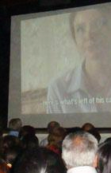
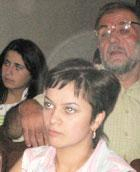
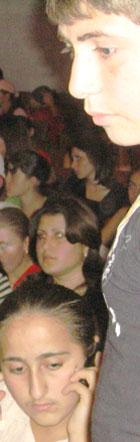
Host: I think you’ll agree with me that this film raises very important questions. Before we start, I’d like to know how many of you would like to go to such a school, raise your hands. (An obvious minority of hands is raised but enough for one small class)
👤 These types of schools have a good meaning because the kids not only have the opportunity to study together but the also they live next-door from one another and communicate with each other.
Host: My question was directed towards the very idea of the making of this type of school. It’s obvious today we don’t have the opportunity but is there a desire? What do you think, was it easy for the kids to go to that school?
👤 Considering that this film was about kids it was still very heavy. I got the heaviest impression from the episode where the Jewish kids were praying according to Muslim tradition while their parents were sitting and observing it with the look of tension on their faces...
In this school they taught the kids to compromise to one another yet the teachers had a quarrel. This only shows that in adult life a conflict may be more powerful than good will.
Host: So should kids not communicate with each other?
👤 It’s good to communicate and know each other, but not to that level. Jews, even atheists and their kids doing namaz, that’s just unheard of!
👤 My opinion is that our kids cannot know weather they’d like to go to such a school, because they don’t know anything about the Azerbaijanis. It’s important to first know each other.
👤 This was a cruel film about the parents experimenting to enforce their own ideas onto their kids. How many people have seen an Azerbaijani other then people of our generation who have a vague notion of who the Azerbaijanis are. And our kids don’t have the slightest clue.
👤 Due to the fact that I lost close ones during the war, I keep telling my kids how dangerous the Turks can be, so that they have an understanding of who is the Turk. I am a democrat with all my soul but we need to be cautious, there is still the question of the Armenian case in Court.
Host: I give the word to our guest from Georgia; she’d like to share the impressions she got from the film.
Marina Meshvildishvili: Today in the audience there are representatives of a free generation. We, the elders had a different ideology, and I wish for you not to make the same mistakes that we did. First and foremost a free individual must possess tolerance and humanity within himself or herself. I’d like to tell you about the reason of my involvement into the Georgian- Ossetian dialog. In our Georgian family there were never any conversations about loving or hating some nation. We lived in multinational Tskhinvali. We could not persuade my father to leave Tbilisi with us in 1991 when the riots began .A year later he was killed on his front porch, after another year my mother died. I am telling you all this because I want you to know how people dye in wars where brother kills brother. Instead of taking up arms and avenging my parents I decided to do everything possible so no one else gets killed in such a war.
When we organized community camps for Georgian and Ossetian children the first few days the children did not want to communicate with one another, they would even shut their ears so they wouldn’t hear unknown, ”enemy” songs. But a week later children would come up to me and ask me to have their rooms changed so they could reside with their new friends, Georgians with Ossetians. And when it came time for farewells they all had tears in their eyes.
Your contemporaries in Azerbaijan are feeling the same thing as you. Do not judge your contemporaries (I don’t want to say opponents) superficially. Try putting yourself in their shoes.
Opposition calls opposition, enmity begets enmity. It’s necessary for at least for one side, the intelligent side to take the first step towards peace. Joint projects are required; participation in such projects will help you find out more about each other, to find out what each one of you is thinking. There must be people on both sides who think that dialogue is a much better way to peace, only through dialogue you will be convinced that your contemporaries in Azerbaijan are the same as you. You should research attentively what happened in Georgia and take a lesson out of it so you don’t repeat the same mistakes that were made in the Georgian – Ossetian dialogue.
👤 It’s interesting to me who will be the teacher in that school? Who is going to teach history so there weren’t any problems between Armenian and Azerbaijani kids? I think we should see the teacher before we should ask the kids. How is it possible for representatives of different nations with different histories to learn together?
👤 We have lived a long time as neighbors with Azerbaijan and had good relations. But now due to the situation change we’re simply isolated from one another. I teach Armenian Language and Literature and with that I don’t spread enmity for I think there will be an eventual reconciliation. This opposition will not last long.
Host: I’d like to ask the school kids: What did you like or dislike about this school?
👤 For example I didn’t like when the teacher was trying to convince the kids that Israelis are guilty in front of the Arabs. They should have just left them alone so the kids could learn and play together...
👤 These types of schools have a good meaning because the kids not only have the opportunity to study together but the also they live next-door from one another and communicate with each other.
Host: My question was directed towards the very idea of the making of this type of school. It’s obvious today we don’t have the opportunity but is there a desire? What do you think, was it easy for the kids to go to that school?
👤 Considering that this film was about kids it was still very heavy. I got the heaviest impression from the episode where the Jewish kids were praying according to Muslim tradition while their parents were sitting and observing it with the look of tension on their faces...
In this school they taught the kids to compromise to one another yet the teachers had a quarrel. This only shows that in adult life a conflict may be more powerful than good will.
Host: So should kids not communicate with each other?
👤 It’s good to communicate and know each other, but not to that level. Jews, even atheists and their kids doing namaz, that’s just unheard of!
👤 My opinion is that our kids cannot know weather they’d like to go to such a school, because they don’t know anything about the Azerbaijanis. It’s important to first know each other.
👤 This was a cruel film about the parents experimenting to enforce their own ideas onto their kids. How many people have seen an Azerbaijani other then people of our generation who have a vague notion of who the Azerbaijanis are. And our kids don’t have the slightest clue.
👤 Due to the fact that I lost close ones during the war, I keep telling my kids how dangerous the Turks can be, so that they have an understanding of who is the Turk. I am a democrat with all my soul but we need to be cautious, there is still the question of the Armenian case in Court.
Host: I give the word to our guest from Georgia; she’d like to share the impressions she got from the film.
Marina Meshvildishvili: Today in the audience there are representatives of a free generation. We, the elders had a different ideology, and I wish for you not to make the same mistakes that we did. First and foremost a free individual must possess tolerance and humanity within himself or herself. I’d like to tell you about the reason of my involvement into the Georgian- Ossetian dialog. In our Georgian family there were never any conversations about loving or hating some nation. We lived in multinational Tskhinvali. We could not persuade my father to leave Tbilisi with us in 1991 when the riots began .A year later he was killed on his front porch, after another year my mother died. I am telling you all this because I want you to know how people dye in wars where brother kills brother. Instead of taking up arms and avenging my parents I decided to do everything possible so no one else gets killed in such a war.
When we organized community camps for Georgian and Ossetian children the first few days the children did not want to communicate with one another, they would even shut their ears so they wouldn’t hear unknown, ”enemy” songs. But a week later children would come up to me and ask me to have their rooms changed so they could reside with their new friends, Georgians with Ossetians. And when it came time for farewells they all had tears in their eyes.
Your contemporaries in Azerbaijan are feeling the same thing as you. Do not judge your contemporaries (I don’t want to say opponents) superficially. Try putting yourself in their shoes.
Opposition calls opposition, enmity begets enmity. It’s necessary for at least for one side, the intelligent side to take the first step towards peace. Joint projects are required; participation in such projects will help you find out more about each other, to find out what each one of you is thinking. There must be people on both sides who think that dialogue is a much better way to peace, only through dialogue you will be convinced that your contemporaries in Azerbaijan are the same as you. You should research attentively what happened in Georgia and take a lesson out of it so you don’t repeat the same mistakes that were made in the Georgian – Ossetian dialogue.
👤 It’s interesting to me who will be the teacher in that school? Who is going to teach history so there weren’t any problems between Armenian and Azerbaijani kids? I think we should see the teacher before we should ask the kids. How is it possible for representatives of different nations with different histories to learn together?
👤 We have lived a long time as neighbors with Azerbaijan and had good relations. But now due to the situation change we’re simply isolated from one another. I teach Armenian Language and Literature and with that I don’t spread enmity for I think there will be an eventual reconciliation. This opposition will not last long.
Host: I’d like to ask the school kids: What did you like or dislike about this school?
👤 For example I didn’t like when the teacher was trying to convince the kids that Israelis are guilty in front of the Arabs. They should have just left them alone so the kids could learn and play together...
"to be and to have" film discussion, September 10
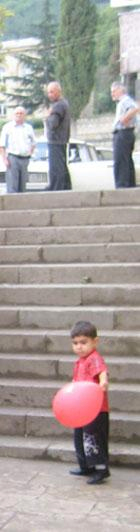
Host: Let’s compare our schools with the one we saw in the film.
👤 As a teacher I consider this film once again proves the simple truth: it all depends on the individual. The education system doesn’t play a major role. In pedagogies the personality of the teacher is more important. We saw a very modest school without any special technical equipment where a one and only teacher were running everything.
👤 Most importantly, in this school that was shown in the movie, is that the teacher is among the students. In our schools everything is still the same as it was during the soviet regime, the teacher is sitting at the podium and governing from up there somewhere. But in the film we see human relations, when the teacher and the child look into each other’s eyes they both learn more about each other.
Why are there so many problems in Caucasus? Because the teachers in Caucasus sit at the podium as usual, and the students somewhere beneath. We must understand that we have an advantage. What happened on the football field in Yerevan? (Meaning the football match to which Turkish president Abdulla Gul was invited) Why must our relations continue to make this way!
Sasun Evanesyan: What is the difference of our school and the one in the film? The school in the movie has the advantage of mutual respect. And that respect is absent in practically all our Armenian schools. Teachers use every possibility they get to demean the pupils various different ways. For them it’s already developed into a habit, that’s not a quality I like about our schools. And the pupils do not have any respect for the teachers likewise. I’d like to go to the school in the film, its just ideal for me.
During the coffee break: Senior pupils were passionately discussing the topic of the possibility of creating «a one teacher school» in their towns. “At the present our schools are small, there are probably more teachers then students. It’s better we pick one good individual to be the teacher that’s not difficult, a lot of the subjects don’t really depend on the teacher because we learn independently, every one according to their ability.” Among the children there appeared to be compassionate ones as well – “There is no need to change anything what’s going to happen to the other teachers, they’ll be taken off the payroll, how will they live?
Mhitar Gishyan speaks about the results of the festival: I really hope the festival will return to us next year. Over all I credit my work as “good”, any organizational hits and misses were due to lack of experience. I’d like to thank Marina Meshvildishvili for coming to us at such a difficult time for Georgia. I’m having difficulties to express in words about what the festival gave me personally. And it brought a wide recognition for our organization.
Recorded by Luiza Poghosyan
Participants of discussions:
inhabitants of town Noyemberyan, villages Koti, Jujevan, Berdavan and Koghb, representatives of town and village administrations and local NGOs
artists, journalists, teachers, students and senior pupil, Marina Meshvildishvili,
Head of 15 NGO coalition «Tskhinvalskiy Dom»,
Irakli Chikhladze, journalist,
Georgi Vanyan, jury member, festival director in Armenia, and
Martina Tikhov,
festival representative
Organization of festival in Noyemberyan: Youth Movement Club
Mkhitar Gishyan
SPECIAL THANKS TO:
Mayor of Noyemberyan
Seryozha Amiraghyan
Noyemberyan Culture House director
Karine Azibekyan
Head of Koti village
community Feliks Melikyan
Head of Koghb village
community Arsen Aghababyan
Koghb Culture House director
Sasun Muradyan
NGO Erevak-Lusatsir, NIKA
During the festival a children’s drawings were shown the theme being peace and human rights.
Three prizewinners were chosen out of the 60 drawings that captured the sympathy of the viewers.
Familiar prizes were also given out:
The prize of Marina Meshvildishvili for realizing the idea of every human’s responsibility for peace
The prize of Irakli Chikhladze for an original realization of the theme
Georgi Vanyan prize for artist skills
South Caucasian Documentary Film Festival of Peace and Human Rights in Armenia
implementing by Caucasus Center of Peace-Making Initiatives
with support of Eurasia partnership foundation - Armenia
and the American People through
the United States Agency
for International Development (USAID)
👤 As a teacher I consider this film once again proves the simple truth: it all depends on the individual. The education system doesn’t play a major role. In pedagogies the personality of the teacher is more important. We saw a very modest school without any special technical equipment where a one and only teacher were running everything.
👤 Most importantly, in this school that was shown in the movie, is that the teacher is among the students. In our schools everything is still the same as it was during the soviet regime, the teacher is sitting at the podium and governing from up there somewhere. But in the film we see human relations, when the teacher and the child look into each other’s eyes they both learn more about each other.
Why are there so many problems in Caucasus? Because the teachers in Caucasus sit at the podium as usual, and the students somewhere beneath. We must understand that we have an advantage. What happened on the football field in Yerevan? (Meaning the football match to which Turkish president Abdulla Gul was invited) Why must our relations continue to make this way!
Sasun Evanesyan: What is the difference of our school and the one in the film? The school in the movie has the advantage of mutual respect. And that respect is absent in practically all our Armenian schools. Teachers use every possibility they get to demean the pupils various different ways. For them it’s already developed into a habit, that’s not a quality I like about our schools. And the pupils do not have any respect for the teachers likewise. I’d like to go to the school in the film, its just ideal for me.
During the coffee break: Senior pupils were passionately discussing the topic of the possibility of creating «a one teacher school» in their towns. “At the present our schools are small, there are probably more teachers then students. It’s better we pick one good individual to be the teacher that’s not difficult, a lot of the subjects don’t really depend on the teacher because we learn independently, every one according to their ability.” Among the children there appeared to be compassionate ones as well – “There is no need to change anything what’s going to happen to the other teachers, they’ll be taken off the payroll, how will they live?
Mhitar Gishyan speaks about the results of the festival: I really hope the festival will return to us next year. Over all I credit my work as “good”, any organizational hits and misses were due to lack of experience. I’d like to thank Marina Meshvildishvili for coming to us at such a difficult time for Georgia. I’m having difficulties to express in words about what the festival gave me personally. And it brought a wide recognition for our organization.
Recorded by Luiza Poghosyan
Organization of festival in Noyemberyan: Youth Movement Club
Mkhitar Gishyan
SPECIAL THANKS TO:
Mayor of Noyemberyan
Seryozha Amiraghyan
Noyemberyan Culture House director
Karine Azibekyan
Head of Koti village
community Feliks Melikyan
Head of Koghb village
community Arsen Aghababyan
Koghb Culture House director
Sasun Muradyan
NGO Erevak-Lusatsir, NIKA
Familiar prizes were also given out:
The prize of Marina Meshvildishvili for realizing the idea of every human’s responsibility for peace
The prize of Irakli Chikhladze for an original realization of the theme
Georgi Vanyan prize for artist skills